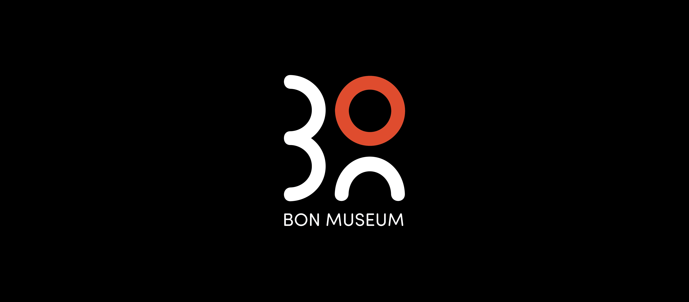
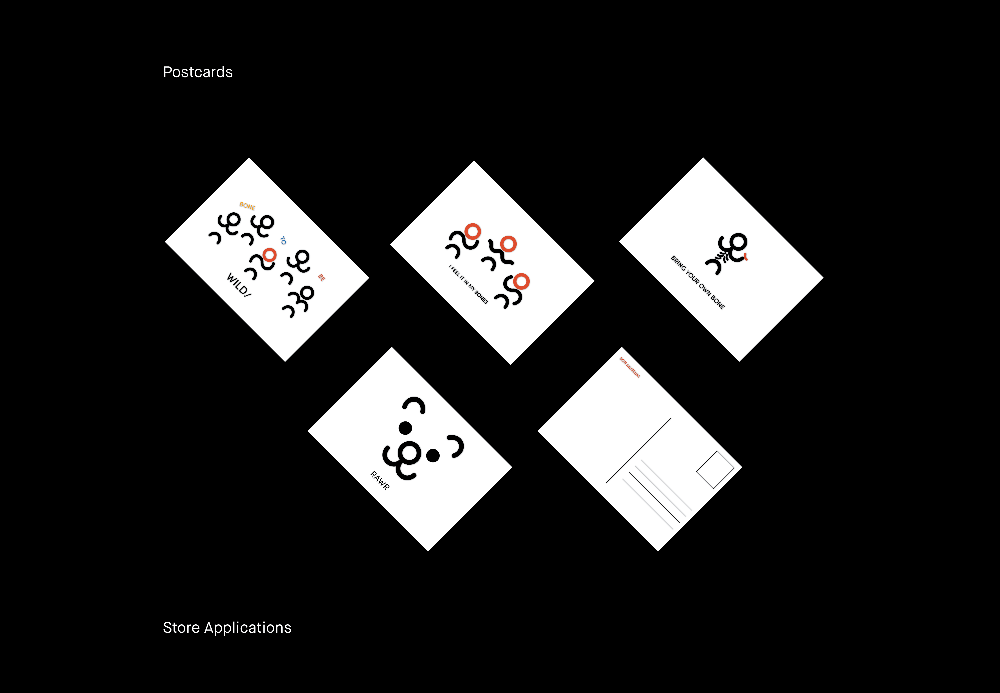
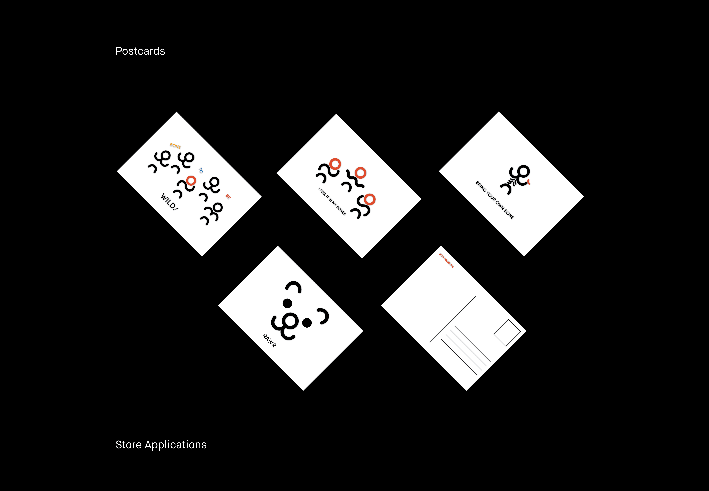
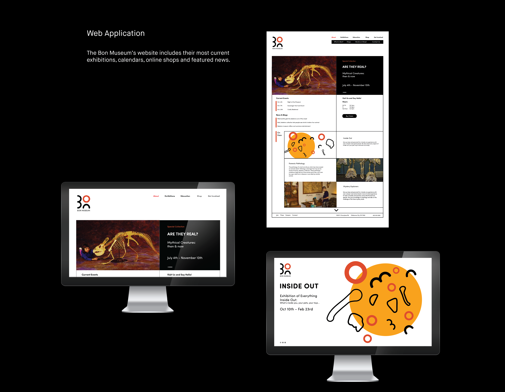
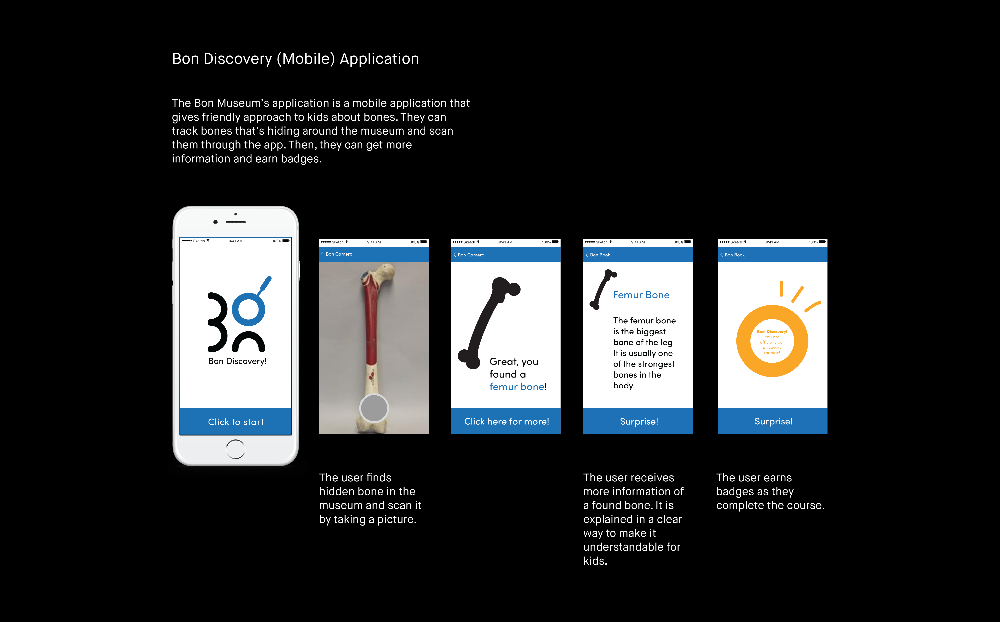
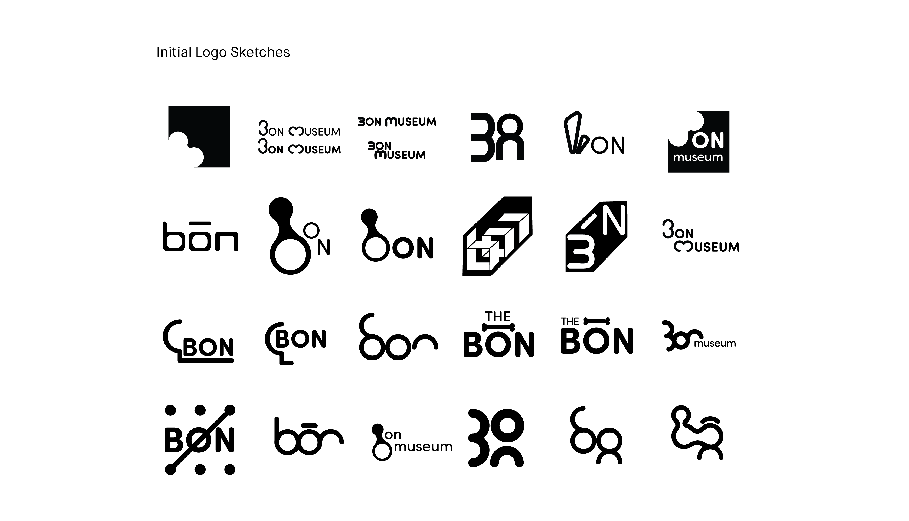
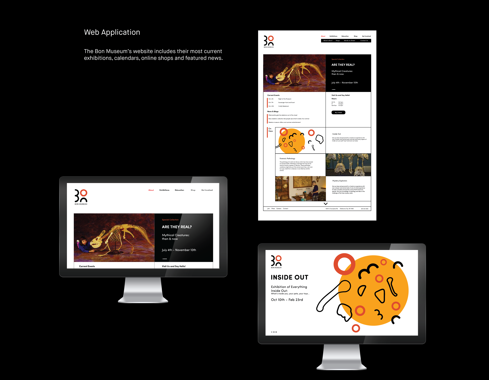
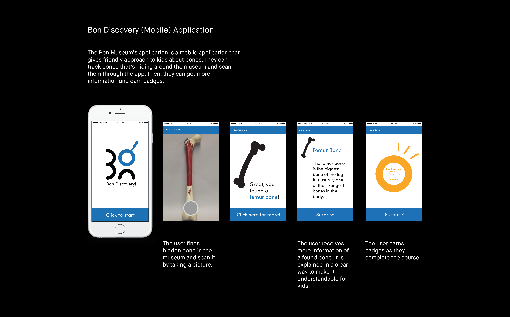
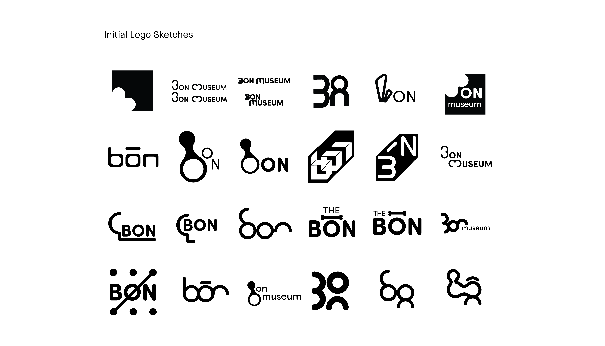

PROJECT BACKGROUND
Bon Museum
Bon Museum is a project originated from “Museum of Osteology” in Oklahoma. I created a whole new identity based on their objective and existing exhibitions. Bon from Bon museum has a double meaning of bone and good. The biggest challenge was building a new experience for the users; to make “bone” more friendly and approachable to kids and even adults. The name itself is hard to grasp at once. I focused on making the identity visually appealing and friendly for museum visitors.

 


 




